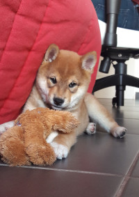

Le Shiba Inu est une race de chien japonaise aux traits distinctifs et à la personnalité captivante. Célèbre pour sa stature élégante et son expression faciale alerte, le Shiba Inu incarne l'esprit fier et indépendant du Japon. De taille moyenne et bien proportionné, le Shiba Inu affiche une allure athlétique et agile. Son pelage dense et double lui confère une apparence majestueuse, avec des couleurs allant du rouge orangé au sésame, en passant par le noir et le crème. Sa queue enroulée sur le dos et ses oreilles triangulaires dressées ajoutent à son charme unique. Mais ce qui distingue véritablement le Shiba Inu, c'est sa personnalité vive et pleine de caractère. Intelligent et curieux, il possède un esprit indépendant et une forte volonté. Bien qu'il soit loyal envers sa famille, il conserve souvent une certaine réserve envers les étrangers. Sa nature fière et sa tendance à agir comme un leader en font un compagnon fascinant mais parfois défiant. Le Shiba Inu est également connu pour sa vocalisation distinctive, souvent décrite comme un "aboie-hurlement", qui peut être entendue lorsqu'il est excité ou alerte. C'est un chien qui apprécie l'exercice et les activités mentalement stimulantes, comme les jeux de réflexion. En tant que race ancienne et vénérée au Japon, le Shiba Inu incarne l'héritage et la tradition de son pays d'origine. Son charme, sa vivacité et son caractère intrépide en font un compagnon inoubliable pour ceux qui ont la chance de partager leur vie avec lui.
Le Shiba Inu est un chien dit primitif, c’est-à-dire que sa race n’a été que très peu modifiée par l’homme et que ses instincts sont plus développés. De ce fait, son éducation n’est pas des plus simples. Il faut que le maître sache faire preuve d'autorité sans violence et soit rigoureux surtout dans les premiers mois du chiot. Comme il est peu docile naturellement, il faut faire preuve de patience pour lui apprendre les bases. Lui apprendre des tours est possible si on le récompense à chaque réussite. L’éducation doit rester positive pour renforcer la confiance du chien. L’apprentissage du rappel suit les mêmes règles de récompenses positives. Il faudra aussi, très jeune, le sociabiliser aux enfants, aux bébés et aux autres animaux. Ce chien peut vivre en appartement à la condition de le sortir très souvent. Plusieurs promenades par jours sont nécessaires. Une maison avec jardin lui conviendra parfaitement, mais ne dispensera pas de quelques sorties. Très actif, il pourrait sinon détruire tout ce qui se trouve sur son passage puisqu’il a besoin de se dépenser quotidiennement. C’est un chien idéalement fait pour la vie à la campagne ou dans une maison avec un jardin, dans lequel il pourra flâner, courir et s’épanouir.
Le Shiba Inu ne pose pas de problèmes de santé particuliers. C’est une race rustique qui ne tombe malade que rarement et qui n’est pas touchée par de graves maladies génétiques. C’est même un chien qui vieillit bien. S’il est suivi convenablement par le vétérinaire pour les vaccins, vermifuges et soins habituels, le Shiba Inu vivra assez vieux. Il s’agit de faire attention aux coups de froid ou de chaud et aux tiques. Le Shiba mâle a cependant plus de soucis que la femelle puisque sa région buccale peut être infectée. Quelques soucis digestifs sont à noter tout comme des petites allergies.
Le Shiba Inu perd ses poils de couverture un peu toute l’année. Toutefois, il est sujet à 2 périodes de mues principales : au printemps et en automne. À cette période, le sous-poil tombe par paquets, c’est impressionnant. Il faut même prévoir un bon aspirateur. Par contre, son poil est autonettoyant. S’il se salit, il suffit de le laisser sécher à l’abri et la poussière tombera d’elle-même au sol. Sa robe demande cependant un brossage régulier pour lui permettre de garder sa brillance et sa beauté. Le Shiba Inu n’a pas besoin de bains fréquents. Un ou deux par an suffisent, car il est propre et son poil n’est pas malodorant. Il faut le brosser avec une carde quotidiennement en période de mue. On peut le brosser à rebrousse-poil pour donner plus de volume à sa fourrure. Il conviendra de bien vérifier l’état de ses dents, de sa bouche afin d’éviter tout développement d’infections dont il est sujet. Comme pour toutes les races, ses ongles doivent être coupés régulièrement afin d'éviter des risques de fissuration, lesquelles peuvent provoquer des douleurs. Les ongles des pattes de chien abritant des vaisseaux sanguins, il est essentiel de consulter un vétérinaire ou un toiletteur si vous êtes novice en la matière. Afin de préserver ses dents, il est également important de les brosser. Ce soin permet d'éliminer l'accumulation de tartre et la prolifération de bactéries.